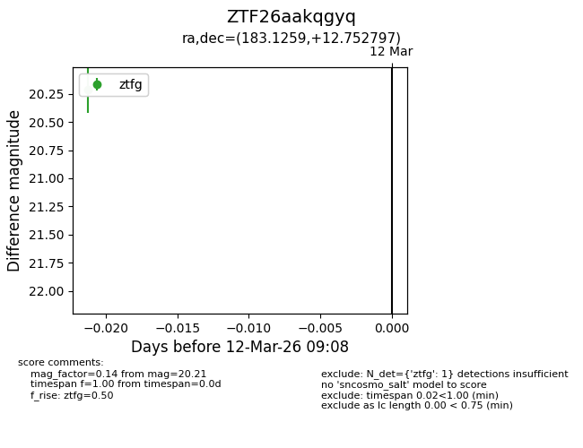
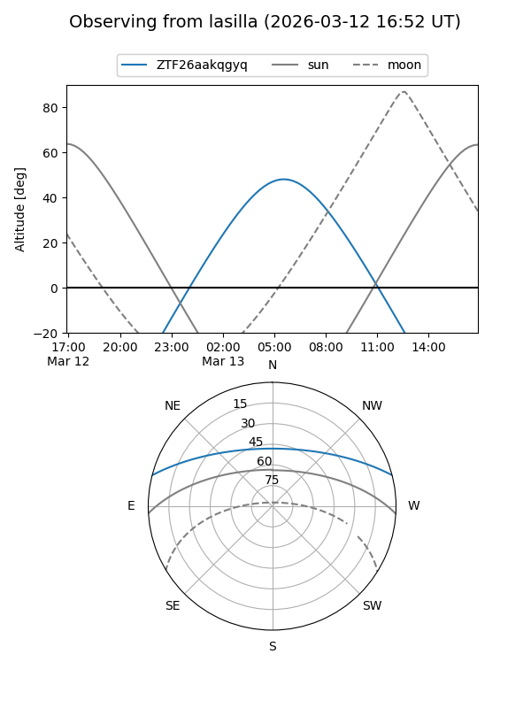
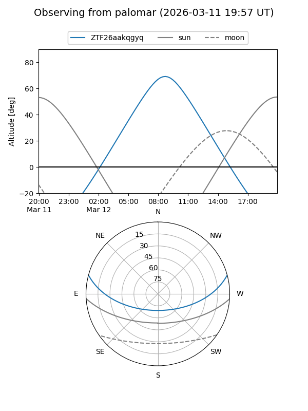
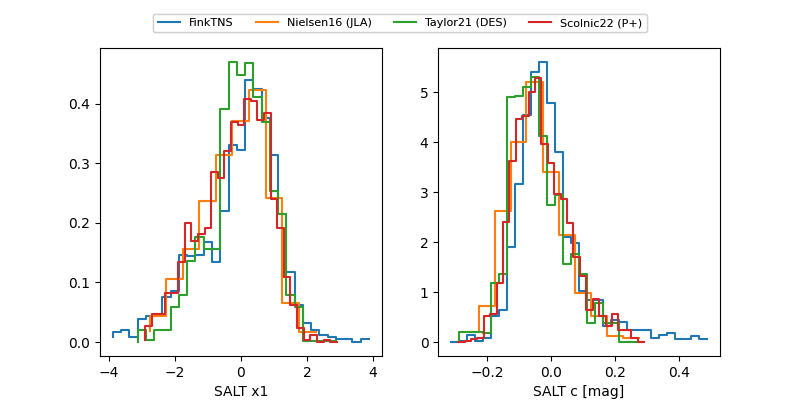

ZTF26aakqgyq
Target ZTF26aakqgyq at 2026-03-12 09:11
Aliases and brokers:
FINK: link
Lasair: link
ALeRCE: link
alt names
ZTF26aakqgyq (ztf,fink_ztf)
Coordinates:
equatorial (ra, dec) = 183.1259,+12.75280
equatorial (HMS+DMS) = 12:12:30.23,+12:45:10.07
galactic (l, b) = (268.6479,+72.97831)
Flags:
Photometry:
last ztfg=20.21
1 ztfg detections
Lightcurve

Visibility


Additional plots
